★ PARAPPA — SHIRTS ★★ パラッパ — シャツ ★
Officially licensed PaRappa the Rapper apparel — t-shirts, character shirts, and promotional tees released in Japan throughout the late 1990s and early 2000s. Designs span the main cast (PaRappa, Sunny Funny, PJ Berri, Katy Kat) as well as crossover and campaign-only prints. The official Cospa "Rodney Characters" catalogue — preserved in this archived snapshot from December 2000 — documents the brand's Rodney-licensed shirt line, featuring both PaRappa and Lammy designs.
公式ライセンスを受けたパラッパラッパーのアパレル。1990年代後半から2000年代初頭にかけて日本で販売されたTシャツ、キャラクターシャツ、プロモーション限定Tシャツなど。パラッパ、サニー・ファニー、PJベリー、ケイティ・キャットといったメインキャラクターのデザインに加え、コラボレーションやキャンペーン限定のプリントアイテムも含まれます。公式のコスパ（Cospa）「Rodney Characters」カタログ（2000年12月アーカイブ）には、パラッパとラミー双方のデザインを含む同ブランドのロドニー公式ライセンスシャツのラインナップが残されています。
— CHARACTER ENSEMBLE —— キャラクター集合 —

White cotton ringer tee with brown trim, featuring a small chest print of the entire PaRappa cast in a yellow circle.茶色のリブで縁取られた白コットンのリンガーTシャツ。胸元にはパラッパのメインキャラクターたちが黄色いサークルに集合した小ぶりなプリントが配されている。
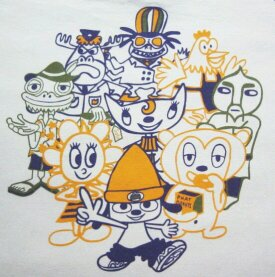
Close-up of the chest print — PaRappa front-and-center with Sunny Funny, Katy Kat, PJ Berri, Master Onion, Prince Fleaswallow, Cheap Cheap and Hairdresser Octopus arranged around him in a two-colour orange/teal screen print.胸プリントのクローズアップ。パラッパを中心に、サニー・ファニー、ケイティ・キャット、PJベリー、オニオン先生、ノミ・ハナシンガエル王子、チープ・チープ、美容師タコが取り囲むように配置された、オレンジとティール二色のシルクスクリーンプリント。
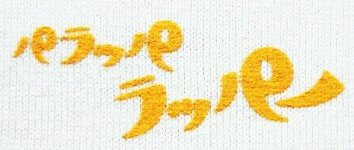
Detail of the yellow embroidered "パラッパラッパー" (PaRappa Rappa) Japanese wordmark stitched onto the shirt.シャツにステッチされた黄色い刺繍ロゴ「パラッパラッパー」のディテール。
— "PARAPPA THE RAPPER" LOGO TEES —— 「PaRappa The Rapper」ロゴTシャツ —

Purple tee with a large back print pairing the "PaRappa The Rapper" wordmark with PaRappa's iconic lyric "I'm PaRappa and I'm no slob. I gotta listen to this song." and a small vinyl-record logo on the front.紫のTシャツ。背面には「PaRappa The Rapper」のロゴと、パラッパの名セリフ「I'm PaRappa and I'm no slob. I gotta listen to this song.」をあしらった大判プリント、前面には小さなレコード盤ロゴが入る。
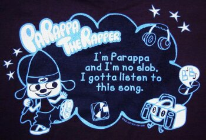
Close-up of the back print showing PaRappa, a boombox, and headphones framing the lyric bubble, all in a pale-blue screen print on navy.背面プリントのクローズアップ。パラッパ、ラジカセ、ヘッドフォンがセリフの吹き出しを囲んでおり、ネイビー地に淡いブルーのシルクスクリーンでプリントされている。
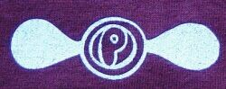
Front chest detail — the small "P" vinyl-record logo printed on the left chest.胸元のディテール。左胸にプリントされた小さな「P」レコード盤ロゴ。
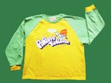
Long-sleeve raglan with yellow body and green sleeves, printed with the classic bubble "PaRappa The Rapper" logo and an "I Gotta Believe!!" headline.イエローボディにグリーンの袖を合わせたラグラン長袖シャツ。定番のバブル体「PaRappa The Rapper」ロゴと「I Gotta Believe!!」のヘッドラインがプリントされている。

Close-up of the bubble-logo print — PaRappa throwing up a peace sign beside the classic wordmark, flanked by stars and music notes.バブルロゴプリントのクローズアップ。定番ワードマークの隣でピースサインをきめるパラッパ、星と音符があしらわれている。

Cream-coloured tee printed with "I Gotta Believe!! Here's The PARTY!" — a DJ-booth scene featuring PaRappa on the decks with PJ Berri.クリーム地のTシャツ。「I Gotta Believe!! Here's The PARTY!」の文字と、DJブースでターンテーブルを回すパラッパとPJベリーのシーンがプリントされている。

Close-up of the DJ print in red and blue line-art — PaRappa behind twin turntables with PJ rapping on the mic.赤と青のラインアートで描かれたDJプリントのクローズアップ。ターンテーブル2台を操るパラッパと、マイクでラップするPJベリー。
— RGSTYLE "I GOTTA BELIEVE" BLUE TEE —— RGstyle「I Gotta Believe」ブルーTシャツ —

Deadstock light-blue RGStyle tee with original hang tags, front-printed with a dashing PaRappa above the "I Gotta Believe!! — THE HIP HOP HERO — PaRappa The Rapper" banner.タグ付きデッドストックの水色RGstyle Tシャツ。前面には駆けるパラッパと「I Gotta Believe!! — THE HIP HOP HERO — PaRappa The Rapper」のバナーがプリントされている。

Close-up of the front print — red, white, and blue illustration licensed © Rodney A. Greenblat / I.P.前面プリントのクローズアップ。赤・白・青で描かれたイラストで、ライセンスは © Rodney A. Greenblat / I.P. と明記されている。
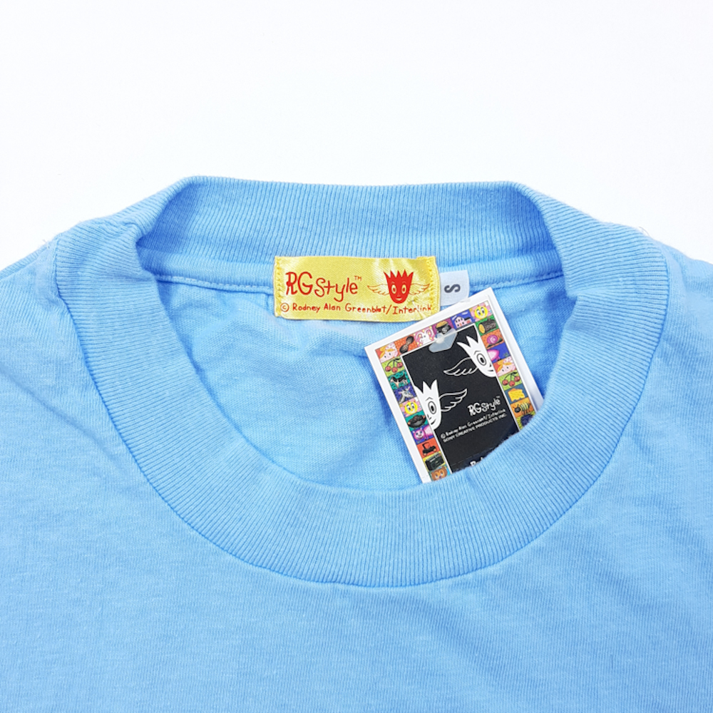
Inner collar view — yellow RGStyle woven label co-credited to "Rodney Alan Greenblat / Interlink", with the Rodney-character mosaic hang tag still attached.襟裏のビュー。「Rodney Alan Greenblat / Interlink」共同クレジットの黄色いRGstyleネームラベルと、ロドニーキャラモザイク柄のハングタグが付いたまま。
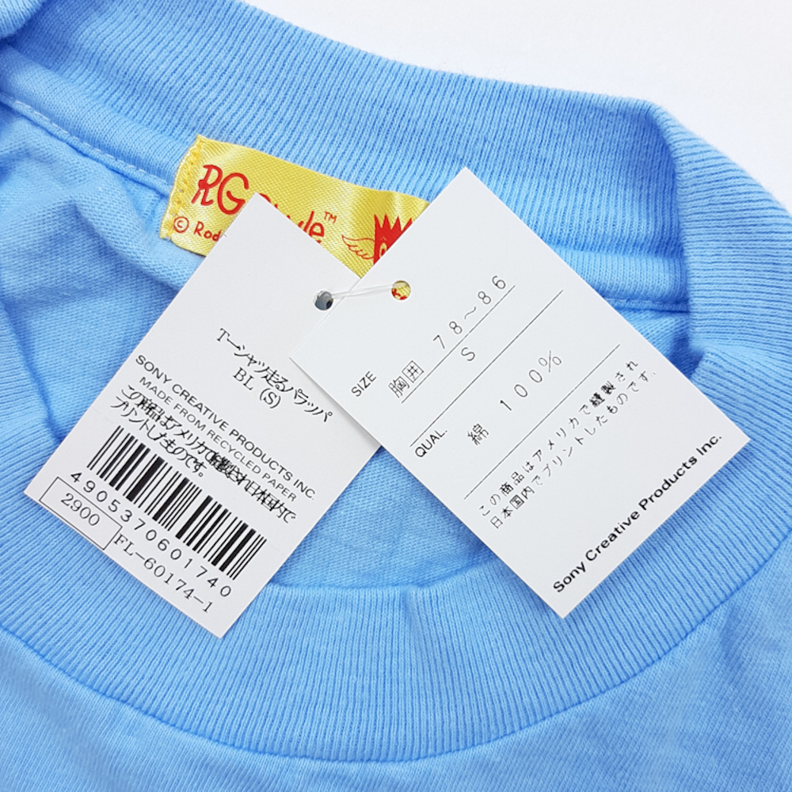
Sony Creative Products hang tag — size S, 100% cotton, bust 78–86cm, barcode SKU and a Japanese-market care statement.ソニー・クリエイティブプロダクツのハングタグ。Sサイズ、綿100％、バスト78〜86cm、バーコード付きSKUと国内向けの品質表記。
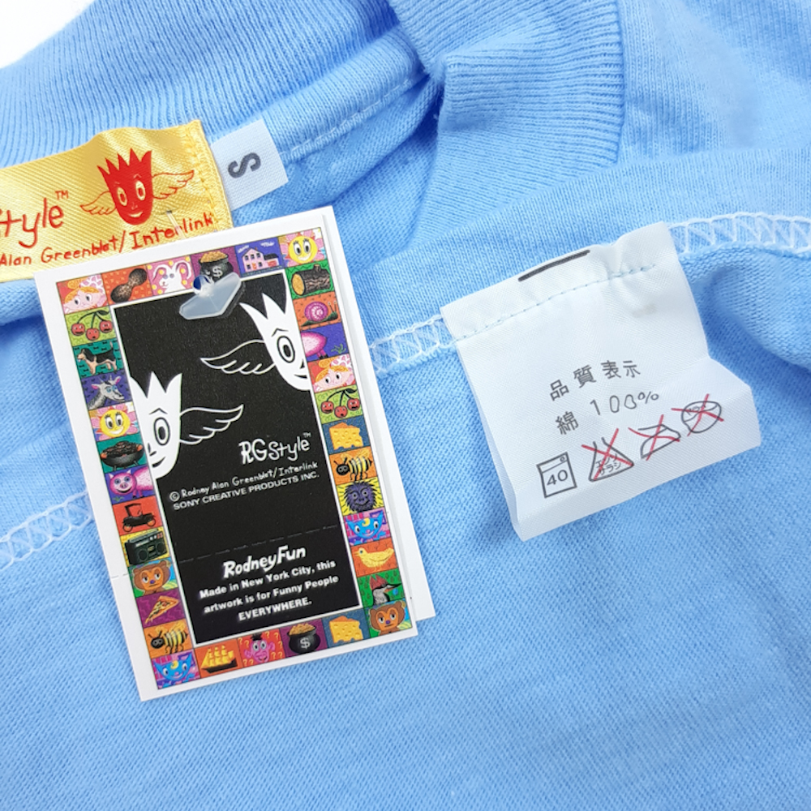
Back of the Rodney-character hang tag reading "RodneyFun — Made in New York City; this artwork is for funny people EVERYWHERE.", alongside the inner Japanese care label.ロドニーキャラクターのハングタグ裏面。「RodneyFun — Made in New York City; this artwork is for funny people EVERYWHERE.」と記載され、内側には日本語の取り扱い表記ラベルも見える。
— CHARACTER GRAPHIC TEES —— キャラクターグラフィックTシャツ —

Forest-green tee with a chest graphic of warrior PaRappa holding a shield, and a smaller "PaRappa The Rapper" + frog-logo print at the back neck.フォレストグリーンのTシャツ。胸には盾を構えた戦士姿のパラッパが大きくプリントされ、背面のネック下には小さく「PaRappa The Rapper」ロゴとカエルのマークが配置されている。

Close-up of the front graphic — PaRappa in red beanie raising a tribal-style shield, with the "PARAPPA" wordmark in distressed white beneath.前面プリントのクローズアップ。赤いビーニー姿のパラッパがトライバル風の盾を掲げ、下にはかすれ加工の白文字で「PARAPPA」とレタリングされている。
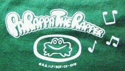
Back-neck detail — the bubble "PaRappa The Rapper" wordmark paired with the green frog icon from PaRappa's beanie.背面ネック下のディテール。バブル体「PaRappa The Rapper」ロゴと、パラッパのビーニーに描かれた緑のカエルアイコンが組み合わされている。
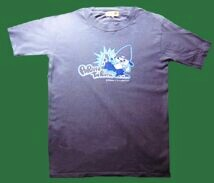
Navy-blue tee printed with an energetic fist-pumping PaRappa and the classic bubble "PaRappa The Rapper" logo at the chest.ネイビーブルーのTシャツ。胸元には拳を突き上げる躍動感あるパラッパと、定番のバブル体「PaRappa The Rapper」ロゴがプリントされている。
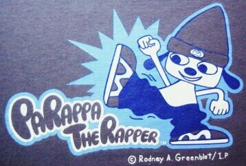
Close-up of the two-tone blue print — PaRappa mid-cheer against an explosive burst, copyrighted "© Rodney A. Greenblat / I.P."2色ブルーのプリントのクローズアップ。爆発のような背景を背に拳を突き上げるパラッパで、下には「© Rodney A. Greenblat / I.P.」と記載されている。

Red cotton tee with a four-panel character-portrait grid print on the chest.赤コットンのTシャツ。胸元に4コマ構成のキャラクター肖像グリッドがプリントされている。

Close-up of the four-panel grid in stitched-line art — Sunny Funny, PaRappa, PJ Berri, and Katy Kat portraits under the "PaRappa The Rapper" title.ステッチ風ラインアートで描かれた4コマグリッドのクローズアップ。「PaRappa The Rapper」タイトルの下に、サニー・ファニー、パラッパ、PJベリー、ケイティ・キャットの肖像が並ぶ。
— RODNEYFUN SKETCH-LINE TEES —— RodneyFun スケッチラインTシャツ —
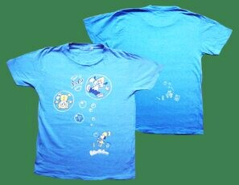
Light-blue tee with a sketch-line "Fun with Bubbles" print — PaRappa blowing bubbles that contain each of his friends.ライトブルーのTシャツ。線画タッチの「Fun with Bubbles」プリントで、パラッパが吹いたシャボン玉の中に仲間たちが1人ずつ閉じ込められている。
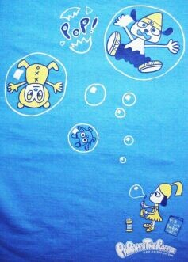
Close-up of the bubble print — PJ Berri, Katy Kat, Sunny Funny and PaRappa (blowing soap from a bottle) inside individual bubbles, stamped "POP!"シャボン玉プリントのクローズアップ。PJベリー、ケイティ・キャット、サニー・ファニー、そしてボトルから石鹸液を吹くパラッパが、それぞれのシャボン玉の中にいる。「POP!」の文字も添えられている。

Additional back-side sketch — a bubble-blowing "Soapy Bud" character with a cart, bubbles, and a "Fun with Bubbles" label.背面に追加で描かれたスケッチ。「Soapy Bud」というシャボン玉キャラクターが台車と一緒に描かれ、「Fun with Bubbles」のラベルも添えられている。
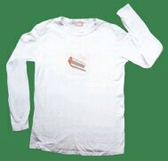
White long-sleeve tee with a small "I Gotta Believe!!" candy-bar chest graphic.白のロングスリーブTシャツ。胸元に小さく「I Gotta Believe!!」のキャンディバー風グラフィックがプリントされている。

Close-up of the sketch-style print — a wrapped chocolate bar tumbling on a grid floor with a tiny PaRappa behind it, captioned "I GOTTA BELIEVE!!"スケッチ調プリントのクローズアップ。方眼の床にチョコバーが転がり、その後ろに小さなパラッパが描かれ、下に「I GOTTA BELIEVE!!」のキャプションが添えられている。
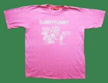
Hot-pink tee with a white sketch-line "SUNNYFUNNY — Thank you!" print of Sunny handing out flowers.ショッキングピンクのTシャツ。白い線画で「SUNNYFUNNY — Thank you!」と描かれ、花を配るサニー・ファニーがプリントされている。
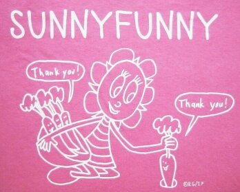
Close-up of the Sunny print — Sunny Funny with a basket of carrots and a single carrot in hand, both saying "Thank you!"サニープリントのクローズアップ。にんじんを詰めたバスケットを抱え、手にも1本持ったサニー・ファニーと、にんじん自身がそれぞれ「Thank you!」と言っている。

Light-blue long-sleeve tee with a "She Can Really Sing!" print of Sunny Funny singing while playing a ukulele — RodneyFun.com branding.ライトブルーのロングスリーブTシャツ。ウクレレを弾きながら歌うサニー・ファニーが描かれた「She Can Really Sing!」プリントで、RodneyFun.com のブランディング入り。

Close-up of the "She Can Really Sing!" print — Sunny mid-strum surrounded by musical notes, credited to RodneyFun.Com.「She Can Really Sing!」プリントのクローズアップ。ウクレレをかき鳴らすサニーが音符に囲まれており、RodneyFun.Com のクレジットが添えられている。
— FROG BEANIE LOGO TEES —— カエル帽子ロゴTシャツ —

Red tee displayed on a hanger at a Japanese retailer, printed with the yellow oval frog-logo badge from PaRappa's beanie.日本の店頭にてハンガー展示された赤いTシャツ。パラッパのビーニーに付いている黄色い楕円のカエルロゴバッジがプリントされている。
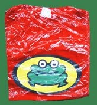
Same red frog-badge tee — factory-sealed in its original plastic bag.同じ赤いカエルバッジのTシャツ。オリジナルのビニール袋に未開封で封入された状態。
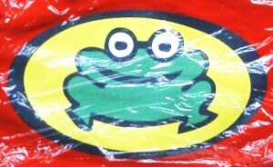
Close-up of the frog-badge print through the bag — the iconic green frog inside a yellow oval with a black outline.ビニール越しに撮影したカエルバッジプリントのクローズアップ。黒で縁取られた黄色い楕円の中に、おなじみの緑のカエルが描かれている。